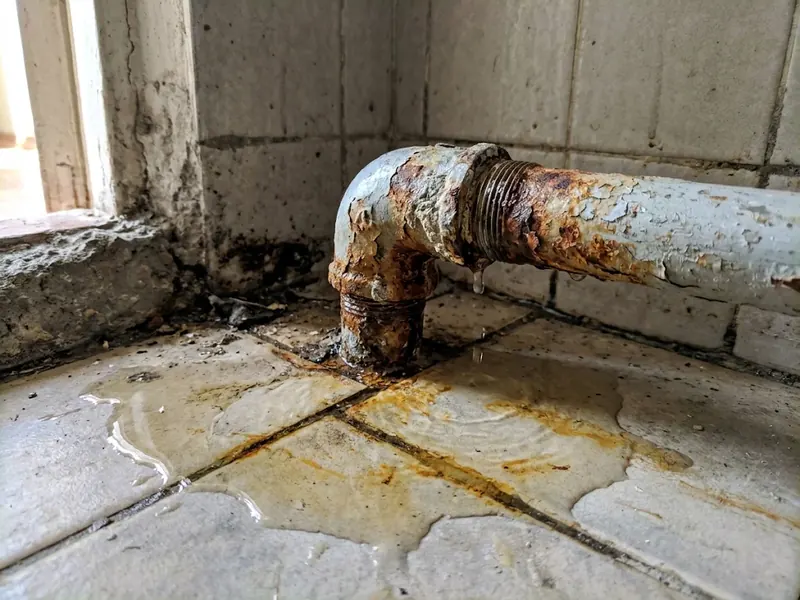

- Проблема
- Вода стоит в ванне, слив забит
- Решение
- Прочистка слива и сифона, ванна уходит быстро
Вода стоит в раковине или ванне, унитаз переливается, из слива пахнет? Устраню засор быстро и без грязи — профессиональным тросом и инструментом.
Узнали свою проблему? Звоните — решу её в тот же день.
Промываю трубы под давлением — с химией или без, по ситуации.
Справляюсь со сложными засорами, а не только вантузом.
Где возможно, прочищаю без снятия сантехники.
Проливаю слив и показываю результат.
Подскажу, как избежать повторного засора.
Пять простых шагов — от звонка до гарантии.
Опишите проблему, можно прислать фото.
Приеду в удобное время, срочные вызовы — сразу.
Называю точную сумму до начала работ.
Делаю аккуратно, своим инструментом.
Проверяем вместе, даю гарантию на работу.
Было и стало — потяните ползунок.


Трос пробивает засор, а промывка водой под давлением очищает стенки трубы от жира и отложений. Засор не возвращается так быстро. Химию добавляю, только если нужно.
Зависит от места и сложности. Опишите проблему в WhatsApp — назову примерную цену, а точную скажу на месте до начала работ.
Обычный засор раковины или ванны — 20–40 минут. Засор в стояке может занять больше.
Да, работаю 24/7. Если вода переливается — звоните сразу.
Позвоните или отправьте заявку: она откроется в WhatsApp уже готовым сообщением.
+7 705 277 63 67WhatsApp: +7 775 649 69 61
Работаю 24/7 во всех районах Алматы.